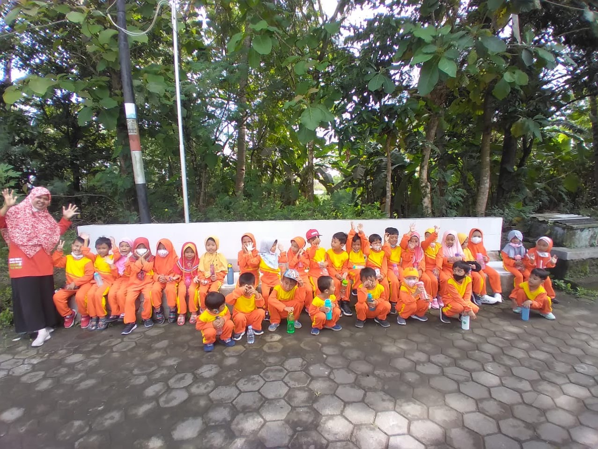
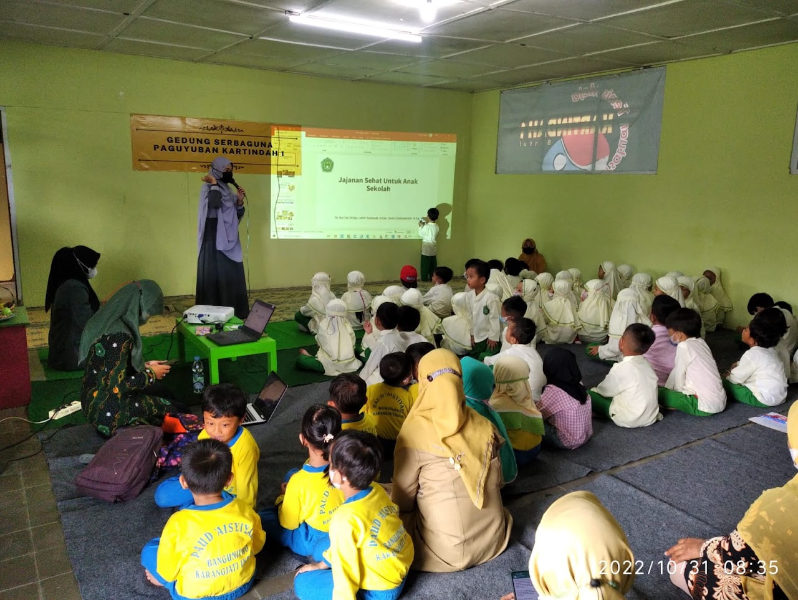
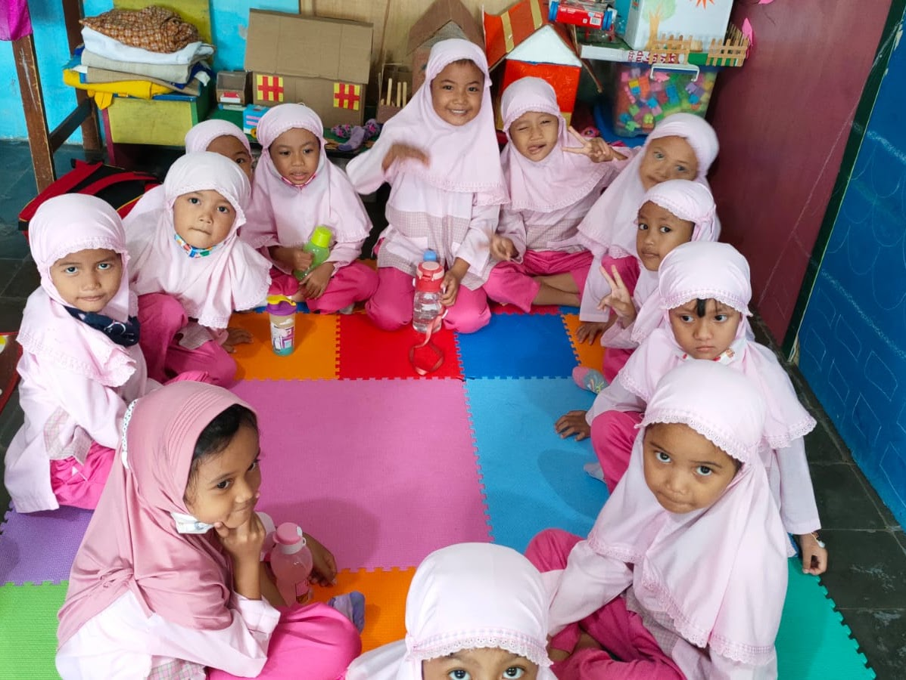
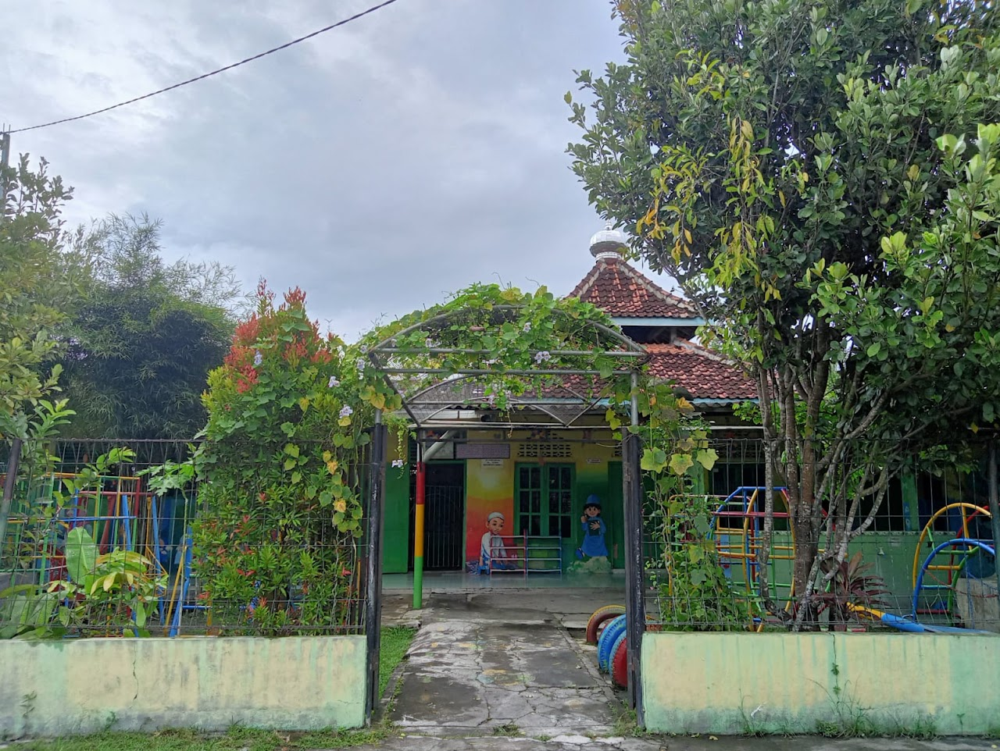
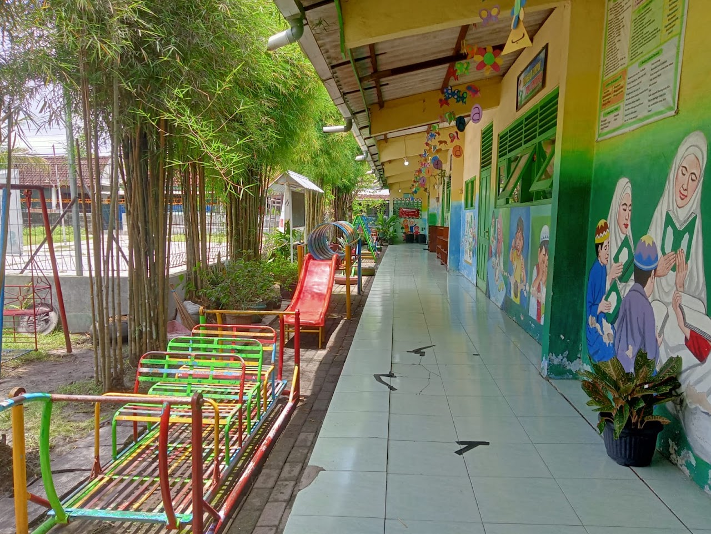
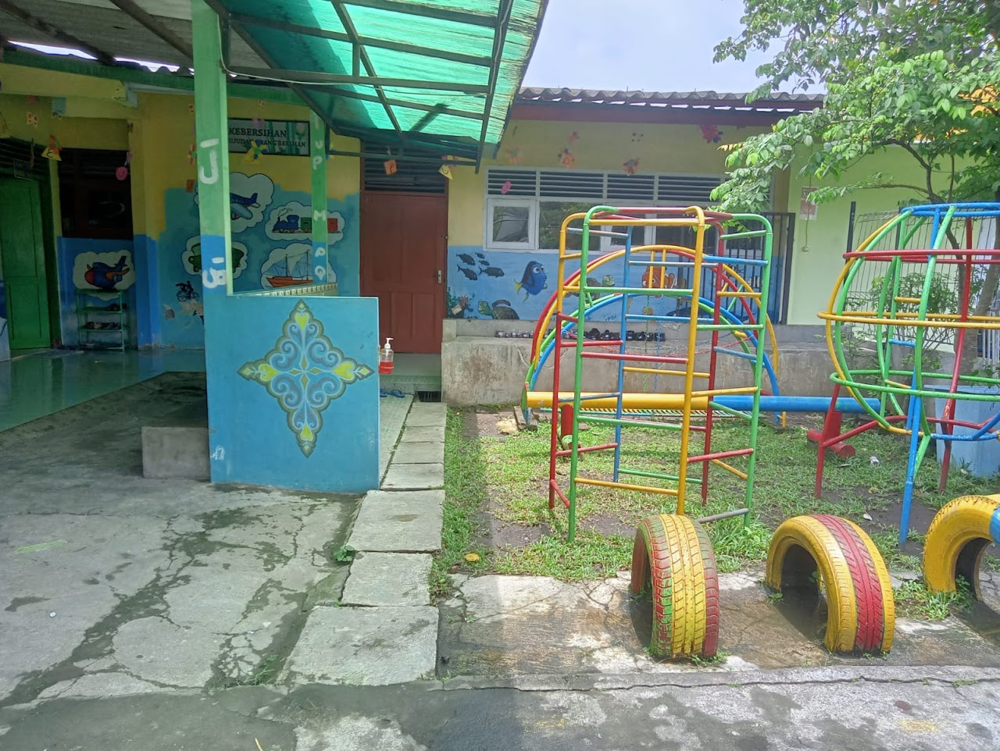
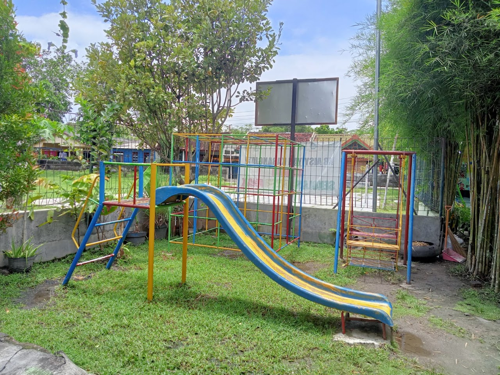
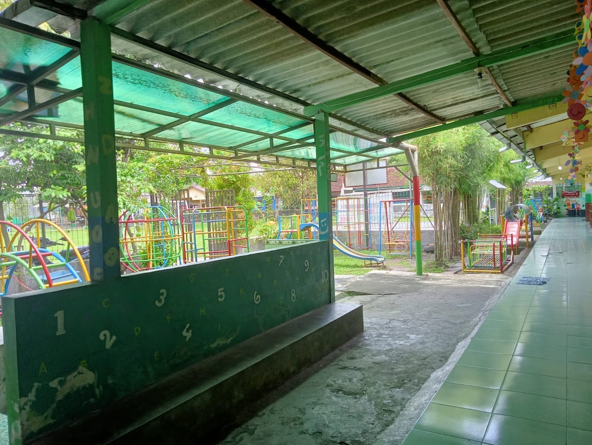
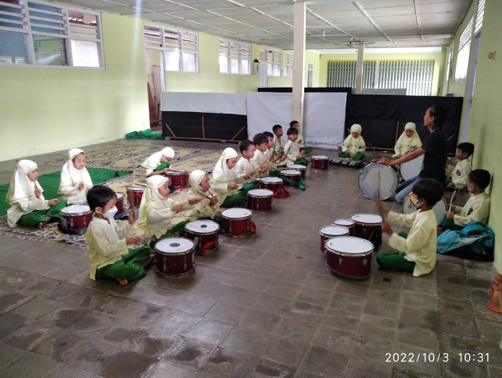

Arsip Resmi & Dokumentasi Ranting
PAUD Terpadu KB-TK Aisyiyah Kartindah 1
PAUD Terpadu KB-TK Aisyiyah Kartindah 1 | PAUD Terpadu KB-TK Aisyiyah Kartindah 1 | Page details
Dokumentasi Visual Asli
Klik foto untuk memperbesar
Galeri Foto & Dokumentasi (9 Foto)

Perbesar
Perbesar
Perbesar
Perbesar
Perbesar
Perbesar
Perbesar
Perbesar
Perbesar
Dokumentasi Audiovisual Resmi
Video Kegiatan Terkait (8 Video)
VISITASI AKREDITASI VIRTUAL 2021 KB AISYIYAH KARANGJATI INDAH 1
Perayaan HUT Republik Indonesia ke 77 #harimerdeka#hutri77#cokelat
KB Aisyiyah Karangjati Indah 1
Permainan melatih kerjasama #anak#paud#permainan#seru
MASA PENGENALAN LINGKUNGAN SEKOLAH
Marhaban Ya Ramadhan 1442 H
Marhaban Ya Ramadhan 1442 H
Video Pembelajaran KB TK ABA Karangjati Indah 1 oleh Nur Istiqomah
Sumber: Dokumentasi Resmi PRM Bangunjiwo Barat
← Kembali ke Beranda